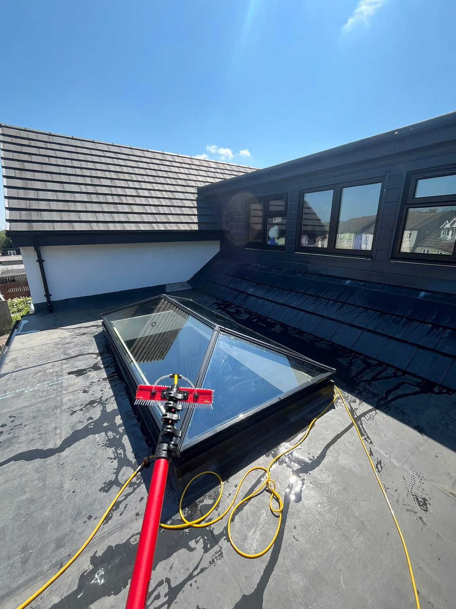
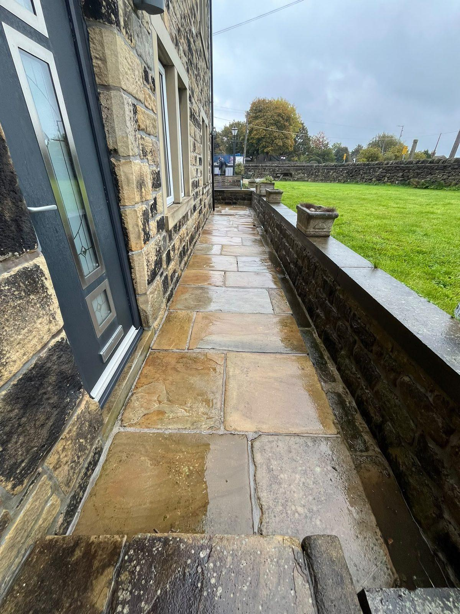

One visit, the whole outside sorted
Book one service or bundle several on the same visit. Everything is done from the ground with pure water wherever we can, so there is nothing to tidy away afterwards and nothing left on your plants or paintwork.

Window cleaning
Glass, frames, sills and doors cleaned every visit with purified water, which dries clear without streaks or spots. Most homes go on a 4- or 8-weekly round; shops, offices and schools get a schedule around opening hours.
- Frames and sills included, always
- Top-floor and dormer windows from the ground
- A message the night before, pay after the visit
- Conservatories, skylights and solar panels on request
UPVC cleaning
Green and grey build-up on fascias, soffits, gutter fronts, door frames and conservatory roofs comes off with a soft brush and pure water. White plastic looks white again, and the house looks cared for from the street.
- Fascias, soffits and gutter fronts
- Conservatory roofs and frames
- Front and back doors, garage doors
- No bleach or solvents near your plants

Gutter cleaning
Blocked gutters overflow onto walls and cause damp. We clear moss, leaves and silt with a vacuum pole, check the run is clear before we leave, and test the downpipes with water.
- Before-and-after photos sent to you
- Vacuum pole from the ground wherever possible
- Waste bagged and taken away
- Annual autumn clear available

Jet washing
Block paving, flags, tarmac, decking and steps pressure-washed to lift years of grime, algae and weeds. A rotary surface cleaner gives an even finish, and block paving can be re-sanded afterwards.
- Driveways, patios and garden paths
- Decking and garden walls
- Car parks and forecourts for businesses
- Re-sanding on request
Questions people ask
No. As long as we can get to the windows we clean, leave a note or message, and you pay afterwards.
No. Purified water has nothing in it to leave marks, so the glass dries clear on its own. We never use detergent on glass.
Light rain makes no difference to pure-water cleaning. In heavy rain or high wind we rearrange and let you know.
Bank transfer after each visit. Regular customers can set up a standing order.